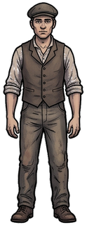
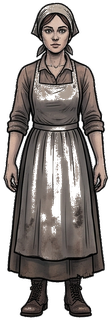

Willkommen zurück
Weiterspielen
Neu beginnen
Wähle deine Figur
Dein Name oder Kürzel
(Pflichtfeld, für die Auswertung)
Bitte trag zuerst deinen Namen ein.

Männlich

Weiblich
Bewegen: WASD / Pfeiltasten ·
E
: Sprechen ·
C
: Codex
F2: Zonen-Editor
Codex
Sprechen
Weiter
Antwort prüfen
Deine Position
Antwort speichern
Theorie-Codex
Deine gesammelten Begriffe. Mit
C
oder
Escape
schließen.
Zurück auf den Platz
Text mit Strg+C kopieren und in zonen.js einfügen. Escape zum Schließen.